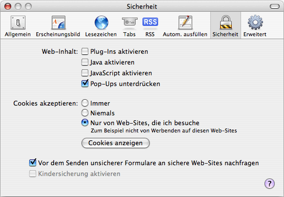

Proxyeinstellungen
Inhalt
Proxyeinstellungen
Inhalt  Browservorbereitung andere Browser
JonDo-Oberfläche
Browservorbereitung andere Browser
JonDo-Oberfläche
Proxyeinstellungen
Inhalt Browservorbereitung andere Browser
JonDo-Oberfläche
Klicken Sie im Menü Safari auf Einstellungen. Folgendes Fenster taucht auf:

Wählen Sie den Tab Sicherheit. Haken Sie folgende Einstellungen ab: Plug-Ins aktivieren, Java aktivieren and JavaScript aktivieren. Bei den Cookies wählen Sie Nur von Web-Sites, die ich besuche.
Bitte beachten Sie:
Das sind lediglich grundlegende Einstellungen. Sie beinhalten keine Anpassungen von HTTP-Headern. Verwenden Sie deshalb JonDoFox, um das Senden sämtlicher digitaler Spuren und die Ausführung von schadhaften aktiven Inhalten zu vermeiden.
Test:
Welche digitalen Spuren Sie noch hinterlassen, können Sie mit dem JonDos-Anonymitätstest überprüfen.
Proxyeinstellungen
Inhalt Browservorbereitung andere Browser
JonDo-Oberfläche